Əvvəl kitablar
Menyu dərsləri kitab başlıqları altında toplanır.
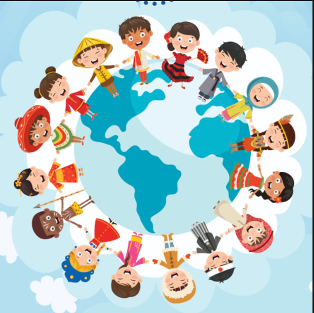
DƏRS KİTABXANASI
Buradan başlayın
Menyudan kitab adını seçin.
Menyu dərsləri kitab başlıqları altında toplanır.
Hər kitab üçün ayrıca qovluq var.
Seçilmiş dərs görünür əvvəlki dərs isə gizlənir.

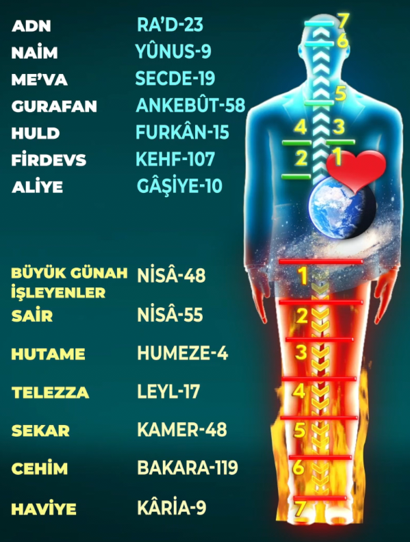
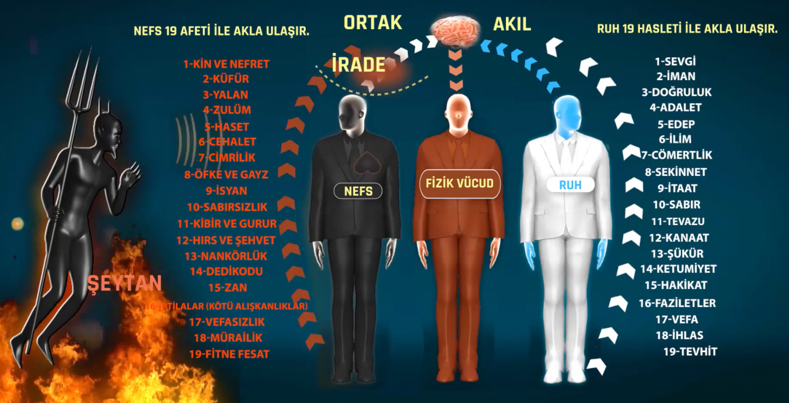
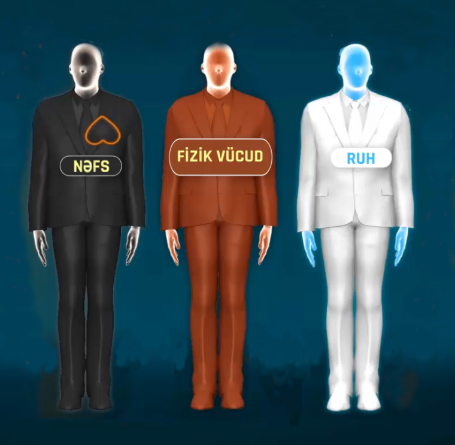
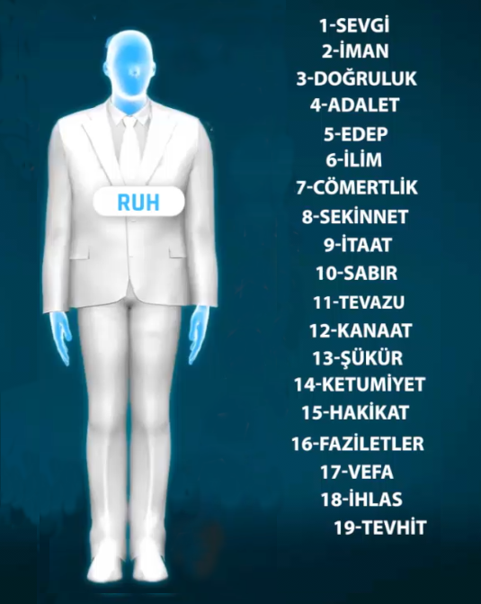
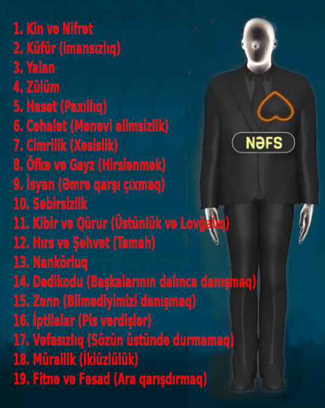
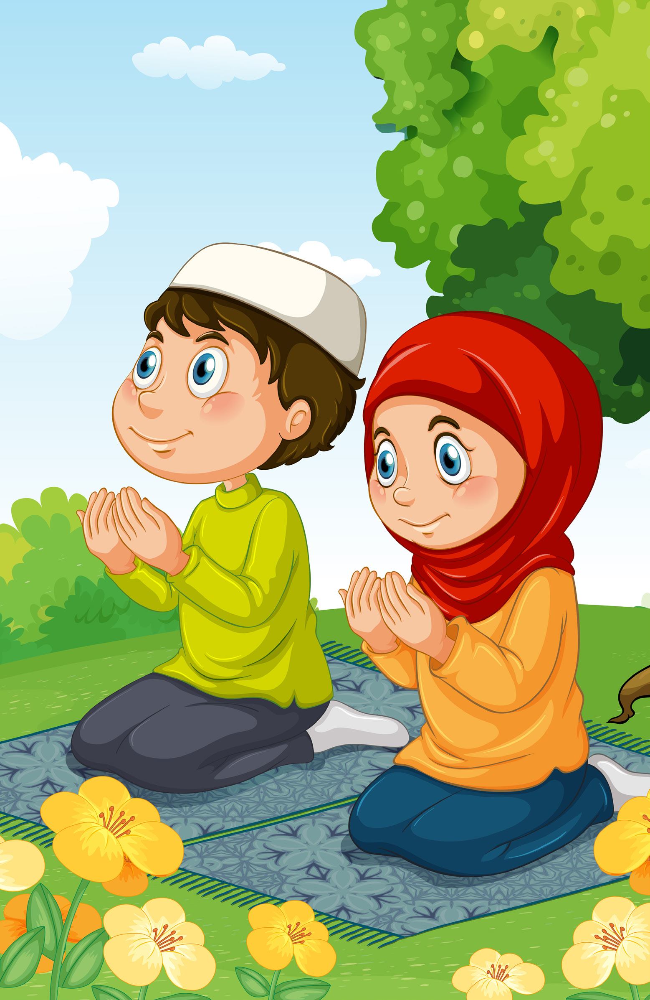
“Əgər siz dua etməyən, bizimlə əlaqə qurmayan varlıqlar olsaydınız, sizi yox edib yerinizə başqalarını gətirərdik” — deyir Allah.
“Ya Rəbbim! Dərslərimdə uğurlu olmaq istəyirəm. Məni uğurlu et, Allahım.” — deyərək, istər iç səsinizlə, istərsə də eşidilən səslə deyin, amma mütləq deməlisiniz.
PEYĞƏMBƏR ƏFƏNDİMİZ (S.A.V) BUYURUR Kİ: “DUA İBADƏTİN ÖZÜDÜR.”
Gözlərinizi yumun və istədiyinizi Allahla istəyin. Ən qısa zamanda bu istəyinizə çatacağınızı təsəvvür edin.
Peyğəmbərimiz (s.a.v) səhabələrə tövsiyə edir: “Allahın dualarınızı qəbul edəcəyinə inanaraq, bundan əmin olaraq dua edin. O zaman mütləq Allah Təala dualarınızı qəbul edər.”
Dua mövzusunda bir hekayəmiz var: Kənd camaatı yağış duasına çıxırlar. Uzun uzun dua edib Allahdan yağış istəyirlər. Ama dua etmələrinə baxmayaraq bir damcı yağış belə yağmır. Saatlarla vaxt itirdikdən sonra geri dönəndə, görürlər ki Baba Ərən köprünün yanındaki bir bulağın başında rahat rahat oturub. Baba Ərəni görən kəndlilər deyir:
Burda bir inanc məsələsinə var. Baba Ərənin inanır ki: “Mən şalvarımı yuyub assam, Allah mütləq yağış yağdıracaq.” Allah da yağdırır.
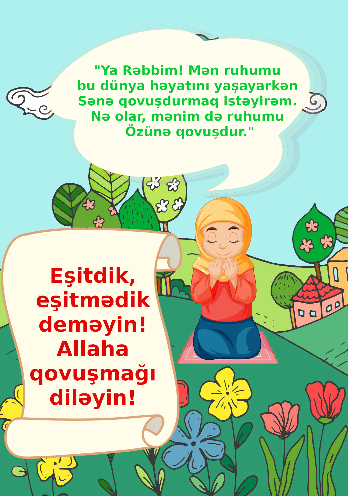
Allaha necə dua etsəniz edin, Allah hamısını nəzərə alır. Amma insanın Allah qatında dəyərli olması yalnız Allaha qovuşmağı diləməsi ilə başlayır.
“Və qullarım səndən Məni soruşduğu zaman, şübhəsiz ki, Mən (onlara) yaxınam. Mənə dua ediləndə, dua edənin duasına (dəvətinə) icabət edərəm (qarşılıq verərəm). O halda, onlar da Mənə (Mənim dəvətimə) icabət etsinlər və Mənə amənu olsunlar (Mənə qovuşmağı diləsinlər). Umular ki, beləliklə, onlar irşada çatarlar (irşad olarlar).”
Bəqərə 186-cı ayətdə Allah birinci hissəsində dünyavi dualarımızı ŞƏRTSİZ qəbul edəcəyinə söz verib.
İkinci hissəsində isə mənəvi dualarımızı ŞƏRTLİ qəbul edəcəyinə söz verib.
ŞƏRT: Amenu olmaq (Allaha qovuşmağı diləməkdir)
Elə isə edəcəyimiz ən önəmli dua Allaha qovuşmağı diləməkdir.
O zaman eyni nəğməni birlikdə deyək: “Hər şey çoxmu gözəldir, yoxsa mənəmi elə gəlir?”
Allah bunu əmr edir,
O, Özünə çağırır,
Bizdə bunu etdikdə,
Dərhal onu qəbul edir.
"Allahın dostluğuna tələsin!
Allaha qovuşmağı diləyin,
səyahətə başlayaq.
Qoy Allah gəmini idarə etsin."
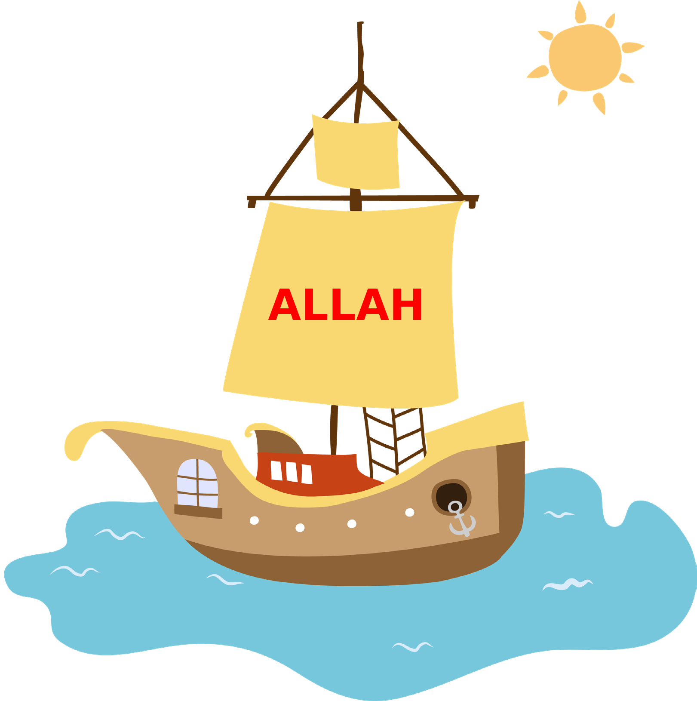
Allaha qovuşmağı diləyən insan xoşbəxtlik qapısından içəri girmişdir. Cənnətin ilk sevincini qazanmışdır.
Beləliklə, xoşbəxtlik qapısını açmaq üçün hərəkətə keçin:
Bundan sonra ruh səyahətə başlayır.
Allahın dostu olmaq bizə dua qədər yaxındır.
Ona görə də Allahın dostluğuna tələsin!
Allaha qovuşmağa diləyin ki səyahət başlasın.
İcazə verin Allah gəmini idarə etsin.
Hamımız dualarımızın tez qəbul olunmasını istəyirik.
Dualarımızın qəbul olunmasını sürətləndirəcək sirr:
"Bir əlin nəyi var? İki əlin səsi var..." sözü sizə nə deyir?
Hər kəs özü üçün Allaha dua edər yalvarır. Məsələn, deyərlər ki: "Ya Rəbbim! Hamını xoşbəxt etmək istəyirəm. Xahiş edirəm, mənə bu işdə kömək elə, Allahım."
Həmişə Allaha müraciət edərək birbaşa Ondan kömək istəməlisiniz. Hamınız bunu mütləq etməlisiniz. İrşad məqamının, yanı mürşidin himməti isə buna əlavədir və daha böyük kömək vasitəsidir.
İnsan Mürşidinə bağlandıqdan sora, Allahdan aldığı yardımdan əlavə, Mürşidin duasına görə daha çox yardım alacaq.
Atalar sözü var: "Bir əlin nəyi var? İki əlin səsi var..." Həm insan Allaha dua edir, həm də Mürşidi onun üçün dua edir buna görə Allahın yardımı iki qat artır.
Əslində, bütün yardımı edən Allahdır. Mürşidin duası ikinci bir dua kimi əlavə olunur.
Quranda Allah bizə səhabəni nümunə verir. Onlar günahları üçün Allahdan bağışlanma diləmişdilər və kainatın ən böyük Mürşidi olan Peyğəmbər Əfəndimiz (S.Ə.V) onlar üçün dua etmişdi. Və beləcə, Allah onların bütün günahlarını bağışlamışdı.
Nisa surəsinin 64-cü ayəsində Allah buyurur: “Həbibim! Nəfslərinə zülm edənlər sənə gəlib qarşında diz çöküb tövbə edərək bağışlanma diləsəydilər, və Sən də onlar üçün bağışlanma diləsəydin, Allahın hər iki tövbəni (hər iki duanı) qəbul etdiyini görərdin”.
Kimin vasitəsilə baş verir?
İnsanın Mürşidi olarsa bu daha böyük nəticəyə gətirib çıxarır.
Bu, Peyğəmbər Əfəndimiz (S.Ə.V) və Allahın bütün övliyaları üçün belə olub.
Allahın övliyası və Mürşidi olan Mövlana Cəlaləddin Rumi deyir: “Bu dərgah ümidsizlər dərgahı deyil. Tövbənizi min dəfə pozsanız belə, yenə gəlin. Mecusi də olsan, bütpərəst də olsan, atəşpərəst da olsan gəl. Kim olursan ol, gəl. Çünki bu dərgah ümidsizlər dərgahı deyil.”
Mövlana bununla nə demək istəyir görəsən?
Mürşidə bağlandığınız zaman, bütün günahlarınız savabla əvəz ediləcək. Burdan Mürşidin duasının nə qədər önəmli olduğunu başa düşürük.
Sizcə tək insanın Allaha dua etməsi daha keçərlidir, yoxsa həm insanın həmdə onun Mürşidinin himməti, duası daha keçərlidi?
Şəxsi dua da Allaha çatır; Mürşidin duası da Allaha çatır. Və o iki dua Allahın qatında birləşir. Buna görə də, Mürşidin himməti, insanın qayreti və Allahın nüsrəti (yardımı) bir araya gəlir.
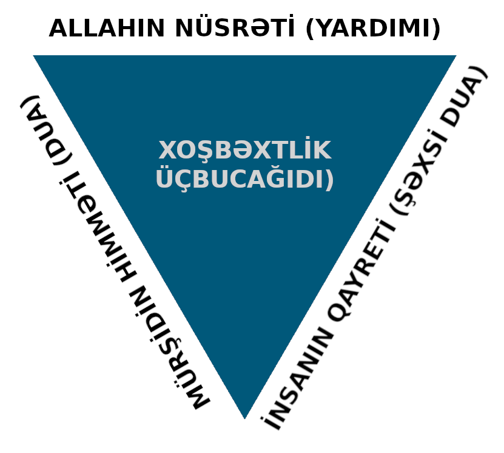
Unutmayın!
Mürşid Allaha qovuşmağı diləyənlərin Allaha qovuşmaları üçün dua
edər!
Yunus, Mürşidi Taptuk Emrenin dərgahından ayrıldıqdan sonra yolda iki
dərvişə rast gəlir. Üçü birlikdə yola davam etməyi qərar verirlər.
Axşam bir mağaraya sığındıqları zaman dərvişlərdən biri Allaha hər
zamankı duasını edir:
— Ya Rəbbim, bizə yemək göndər, nolar?
Allah dərvişin duasını qəbul edir və bir süfrə yemək göndərir.
Dərvişlərin hamısı bu süfrədən yeyib doyurlar.
Sabahsı gün ikinci dərviş də dua edir. Allah onun da duasını qəbul edir
və ona da bir süfrə yemək göndərir. Yenə üçüdə bu süfrədən yeyib
qarınlarını doydururlar.
Üçüncü gecə sıra gəlir Yunusa. Yunus həyatında belə bir şey etməmişdi.
O, əllərini açıb Rəbbinə dua edir:
— Ya Rəbbim! Bu mübarək dərvişlər Sənə necə dua etdilərsə, mən də elə
dua edirəm. Bizə yemək göndər, nolar?
Allah bu dəfə üç süfrə göndərir. Üç süfrəni görən dərvişlər çox
təəccüblənir və soruşurlar:
— Sən necə dua etdin ki, üç süfrə gəldi?
Yunus deyir:
— Mən sizin etdiyiniz duadan etdim. Əslində siz deyin görüm necə dua
etdiniz ki, Allah o süfrələri göndərdi?
Onlar cavab verir ki:
— Bir Yunus var, dərviş Yunus. O, Allah qatında nə qədər dəyərli
olduğunu bilmir. Biz onun himmətini istəyərək Allaha dua edirik.
(El Fâtiha maas salâvât. Ey Yüce Allah’ım, bizlere en’âm buyurduğun bu tayyip ni’metlerle bizleri bugün de rızıklandırdığın için ve bugün de karnımızı bu tayyip ni’metlerle doyurmayı nasip kıldığın için Sana sonsuz hamd ve şükrolsun. Niyet ettik Senin rızan için ihsan buyurduğun bu tayyip ni’metlerle bugünkü rızkımızı almaya. Eûzubillâhimineşşeytanirracîm, bismillâhirrahmânirrâhim.)
(Eûzubillâhiminneşşeytânirracîm, bismillâhirrâhmanirrahîm. Ey Yüce Allah’ım! Bizlere en’âm buyurduğun bu tayyip ni’metlerle bugün de karnımızı doyurmayı nasip kıldığın için ve bugün de bizleri rızıklandırdığın için Sana sonsuz hamd ve şükrolsun. Ferah sofraları olsun, bereket sofraları olsun. Allah’ın sofraları olsun. Allah hepinizden razı olsun. El Fâtiha meas sâlâvat. Afiyet olsun.)
Əziz şagirdlər, yalnız iki cür insan var: duası qəbul edilənlər və duası qəbul edilməyənlər.
Bəs necə dua etmək lazımdır ki, Allah dualarımızı qəbul etsin?
Məsələn, siz orta məktəb şagirdisiniz və dərhal həkim olmaq üçün
Allaha dua edirsiniz.
Əvvəla siz dərs oxuyarsınız, uğur qazanmaq üçün çalışarsınız, və bunlar
üçün Allah sizə köməyini göndərər.
Siz Allahın yardımı ilə sinifləri bir-bir uğurla keçərsiniz və beləliklə
laiq olarsınız.
Sonda isə, vaxtı gəldikdə Allahın yardımı ilə həkim olarsınız.
Allah Bəqərə surəsinin 186-cı ayəsində belə buyurur:
“Bizə dua edildiyi zaman dua edənin duasını qəbul edərik. Ancaq o da
Bizim dəvətimizi qəbul edərsə və Allaha qovuşmağı diləyərsə.”
Dünyaya aid dualarda isə insan Allaha qovuşmağı diləsə də, diləməsə
də, Allah onun duasını mütləq qəbul edər.
Amma mənəvi sahədə olan duaların Allah tərəfindən qəbul edilməsi insanın
Allaha qovuşmağı diləməsindən asılıdır.
Əgər insan Allaha qovuşmağı diləməzsə, onun Mənəvi duaları (Allahın cənnətinə getməsi, dünya səadətinə çatması, günahlarının bağışlanması və savaba çevrilməsi) qəbul edilməz.
İnsanın mənəvi dualarının qəbul olunması üçün mütləq Allaha qovuşmağı diləməsi lazımdır.
TAPŞIRIQ
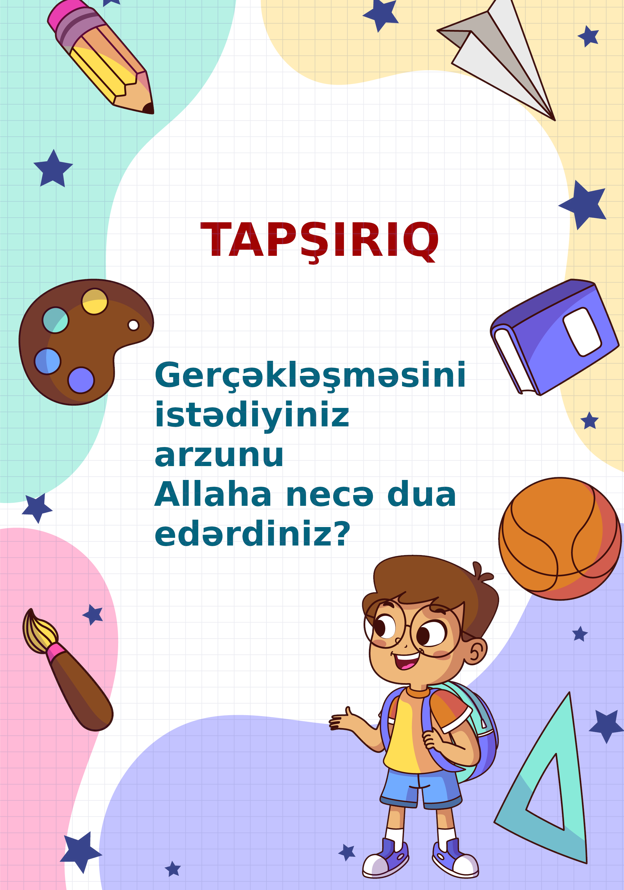
Gerçəkləşməsini istədiyiniz arzuları Allaha necə dua edərdiz?
Misal: Allahım mənə ... ver. Və məni buna laiq qıl.
....